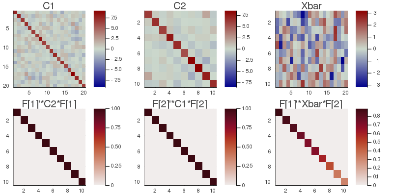

CSTP
In the CSP one assumes that the multiplicity of data have a common structure along one dimension of the input data matrices. For example, in electroencephalography (EEG) a data matrix $X$, which is comprised of $n$ variables corresponding to the spatial locations for the electrodes on the scalp and $t$ temporal samples, this is the spatial dimension. The assumption holds because the same brain source engenders a fixed spatial pattern on the scalp, whereas, in general, the temporal pattern is arbitrary.
The common spatio-temporal pattern (CSTP) extends the CSP to situations when the multiplicity of data have a common structure along both dimensions. In EEG, for example, this is the case of event-related potentials (ERPs). The assumption holds because, again, the same brain source engenders a fixed spatial pattern on the scalp and furthermore ERPs have a quasi-fixed temporal pattern. As the CSP, the CSTP corresponds to the situation $m=1$ (one dataset) and $k=2$ (two observation).
Given a set of $k$ data matrices $\{X_1 \ldots X_k\}$ of dimension $n⋅t$, with mean $\bar{X}=\frac{1}{k}\sum_{i=1}^kX_i$, the goal of the CSTP is to find two matrices $B_{(1)}$ and $B_{(2)}$ verifying
$\left \{ \begin{array}{rl}B_{(1)}^TC_{(2)}B_{(1)}=I\\B_{(2)}^TC_{(1)}B_{(2)}=I\\B_{(1)}^T\bar{X}B_{(2)}=Λ \end{array} \right.$, $\hspace{1cm}$ [cstp.1],
where
$\left \{ \begin{array}{rl}C_{(1)}=\sum_{i=1}^k\frac{1}{t}(X_i^TX_i)\\C_{(2)}=\sum_{i=1}^k\frac{1}{n}(X_iX_i^T) \end{array} \right.$, $\hspace{1cm}$ [cstp.2]
are the mean covariance matrices along the first and second dimension of the $X_i$ matrices and $Λ$ is a diagonal matrix.
In words, the CSTP maximizes the ratio of the variance of the transformed $\bar{X}$ over the transformed mean covariance matrices $C_{(1)}$ and $C_{(2)}$. The CSTP can threfore be used to enhance the signal-to-noise ratio of data matrices mean estimation. For doing so, we retain the filters $\widetilde{B}_{(1)}=[b_{(1)1} \ldots b_{(1)p}]$ and $\widetilde{B}_{(2)}=[b_{(2)1} \ldots b_{(2)p}]$ holding the first $p$ vectors of $B_{(1)}$ and $B_{(2)}$ corresponding to the highest values of the variance ratio $Λ$.
For the CSTP we define the total variance ratio as
$λ_{TOT}=\sum_{i=1}^nλ_i$,
where the $λ_i$ are the diagonal elements of $Λ$ [cstp.1] and we define the explained variance for dimension $p$ such as
$σ_p=\frac{\sum_{i=1}^pλ_i}{λ_{TOT}}$. $\hspace{1cm}$ [cstp.3]
The .arev field of the CSTP filter is defined as the vector of accumulated variance ratios
$[σ_1≤\ldots≤σ_n]$, $\hspace{1cm}$ [cstp.4]
where $σ_j$ is defined in [cstp.3].
For setting the subspace dimension $p$ manually, set the eVar optional keyword argument of the CSTP constructors either to an integer or to a real number, this latter establishing $p$ in conjunction with argument eVarMeth using the arev vector (see subspace dimension). By default, eVar is set to 0.999.
Solution
The CSTP solutions $B_{(1)}$ and $B_{(2)}$ can be found by a two-step procedure (Congedo et al., 2016)🎓:
- get two whitening matrices $\hspace{0.1cm}W_{(1)}\hspace{0.1cm}$ and $\hspace{0.1cm}W_{(2)}\hspace{0.1cm}$ such that $\left \{ \begin{array}{rl}W_{(1)}^TC_{(1)}W_{(1)}=I\\W_{(2)}^TC_{(2)}W_{(2)}=I \end{array} \right.$
- do $\hspace{0.1cm}\textrm{SVD}(W_{(2)}^T\bar{X}W_{(1)})=UΛV^{T}$
The solutions are $\hspace{0.1cm}B_{(1)}=W_{(2)}U\hspace{0.1cm}$ and $\hspace{0.1cm}B_{(2)}=W_{(1)}V$.
Constructors
Two constructors are available (see here below). The constructed LinearFilter object holding the CSTP will have fields:
.F[1]: matrix $\widetilde{B}_{(1)}=[b_{(1)1} \ldots b_{(1)p}]$. This is the whole matrix $B_{(1)}$ if $p=n$.
.F[2]: matrix $\widetilde{B}_{(2)}=[b_{(2)1} \ldots b_{(2)p}]$. This is the whole matrix $B_{(2)}$ if $p=n$
.iF[1]: the left-inverse of .F[1]
.iF[2]: the left-inverse of .F[2]
.D: the leading $p⋅p$ block of $Λ$ in [cstp.1].
.eVar: the explained variance for the chosen value of $p$, given by the $p^{th}$ value of [cstp.4].
.ev: the vector diag(Λ) holding all $n$ diagonal elements of matrix $Λ$ in [cstp.1].
.arev: the accumulated regularized eigenvalues, defined in [cstp.4].
Diagonalizations.cstp — Function
(1)
function cstp( X :: Mat, C₍₁₎ :: SorH, C₍₂₎ :: SorH;
eVar :: TeVaro = ○,
eVarC :: TeVaro = ○,
eVarMeth :: Function = searchsortedfirst,
simple :: Bool = false)
(2)
function cstp( 𝐗::VecMat;
covEst :: StatsBase.CovarianceEstimator = SCM,
meanXd₁ :: Into = 0,
meanXd₂ :: Into = 0,
eVar :: TeVaro = ○,
eVarC :: TeVaro = ○,
eVarMeth :: Function = searchsortedfirst,
simple :: Bool = false,
metric :: Metric = Euclidean,
w :: Vector = [],
✓w :: Bool = true,
init1 :: SorHo = nothing,
init2 :: SorHo = nothing,
tol :: Real = 0.,
verbose :: Bool = false)Return a LinearFilter object:
(1) Common spatio-temporal pattern with $n⋅m$ mean data matrix X, $m⋅m$ covariance matrices C₍₁₎ and $n⋅n$ covariance matrix C₍₂₎ as input.
eVar, eVarC and eVarMeth are keyword optional arguments for defining the subspace dimension $p$. Particularly:
eVarCis used for defining the subspace dimension of the whitening step. The default is 0.999.eVaris the keyword optional argument for defining the subspace dimension $p$ using the.arevvector given by [cstp.5]. The default is given in [cstp.6] here above.eVarMethapplies to botheVarCandeVar. The default value isevarMeth=searchsortedfirst.
If simple is set to true, $p$ is set equal to $n$ and only the fields .F and .iF are written in the constructed object. This option is provided for low-level work when you don't need to define a subspace dimension or you want to define it by your own methods.
(2) Common spatio-temporal pattern with a set of $k$ data matrices 𝐗 as input.
The $k$ matrices in 𝐗 are real or complex data matrices. They must all have the same size.
covEst, meanXd₁ and meanXd₂ are optional keyword arguments to regulate the estimation of the covariance matrices of the data matrices in 𝐗, to be used to compute the mean covariance matrices in [cstp.2] here above. See covariance matrix estimations. meanXd₁ and meanXd₂ are the means along dimension 1 and 2, respectively, of the data matrices in 𝐗.
The mean covariance matrices $C_{(1)}$ and $C_{(1)}$ in [cstp.2] are computed using optional keywords arguments metric, w, ✓w, init1, init2, tol and verbose, which allow to compute non-Euclidean means. Particularly (see mean covariance matrix estimations),
init1is the initialization for $C_{(1)}$,init2is the initialization for $C_{(2)}$.
By default, the arithmetic means [cstp.2] are computed.
Once the two covariance matrices $C_{(1)}$ and $C_{(2)}$ estimated, method (1) is invoked with optional keyword arguments eVar, eVarC, eVarMeth and simple. See method (1) for details.
Examples:
using Diagonalizations, LinearAlgebra, PosDefManifold, Test
# Method (1) real
t, n, k=10, 20, 10
Xset = [genDataMatrix(t, n) for i = 1:k]
Xfixed=randn(t, n)./1
for i=1:length(Xset) Xset[i]+=Xfixed end
C1=Hermitian( mean((X'*X)/t for X∈Xset) )
C2=Hermitian( mean((X*X')/n for X∈Xset) )
Xbar=mean(Xset)
c=cstp(Xbar, C1, C2; simple=true)
@test c.F[1]'*C2*c.F[1]≈I
@test c.F[2]'*C1*c.F[2]≈I
Z=c.F[1]'*Xbar*c.F[2]
n=minimum(size(Z))
@test norm(Z[1:n, 1:n]-Diagonal(Z[1:n, 1:n]))+1. ≈ 1.
cX=cstp(Xset; simple=true)
@test c==cX
# Method (1) complex
t, n, k=10, 20, 10
Xcset = [genDataMatrix(ComplexF64, t, n) for i = 1:k]
Xcfixed=randn(ComplexF64, t, n)./1
for i=1:length(Xcset) Xcset[i]+=Xcfixed end
C1c=Hermitian( mean((Xc'*Xc)/t for Xc∈Xcset) )
C2c=Hermitian( mean((Xc*Xc')/n for Xc∈Xcset) )
Xcbar=mean(Xcset)
cc=cstp(Xcbar, C1c, C2c; simple=true)
@test cc.F[1]'*C2c*cc.F[1]≈I
@test cc.F[2]'*C1c*cc.F[2]≈I
Zc=cc.F[1]'*Xcbar*cc.F[2]
n=minimum(size(Zc))
@test norm(Zc[1:n, 1:n]-Diagonal(Zc[1:n, 1:n]))+1. ≈ 1.
cXc=cstp(Xcset; simple=true)
@test cc==cXc
# Method (2) real
c=cstp(Xset)
# ... selecting subspace dimension allowing an explained variance = 0.9
c=cstp(Xset; eVar=0.9)
# ... giving weights `w` to the covariance matrices
c=cstp(Xset; w=abs2.(randn(k)), eVar=0.9)
# ... subtracting the means
c=cstp(Xset; meanXd₁=nothing, meanXd₂=nothing, w=abs2.(randn(k)), eVar=0.9)
# explained variance
c.eVar
# name of the filter
c.name
using Plots
# plot the original covariance matrices and the transformed counterpart
c=cstp(Xset)
C1Max=maximum(abs.(C1));
h1 = heatmap(C1, clim=(-C1Max, C1Max), title="C1", yflip=true, c=:bluesreds);
D1=c.F[1]'*C2*c.F[1];
D1Max=maximum(abs.(D1));
h2 = heatmap(D1, clim=(0, D1Max), title="F[1]'*C2*F[1]", yflip=true, c=:amp);
C2Max=maximum(abs.(C2));
h3 = heatmap(C2, clim=(-C2Max, C2Max), title="C2", yflip=true, c=:bluesreds);
D2=c.F[2]'*C1*c.F[2];
D2Max=maximum(abs.(D2));
h4 = heatmap(D2, clim=(0, D2Max), title="F[2]'*C1*F[2]", yflip=true, c=:amp);
XbarMax=maximum(abs.(Xbar));
h5 = heatmap(Xbar, clim=(-XbarMax, XbarMax), title="Xbar", yflip=true, c=:bluesreds);
DX=c.F[1]'*Xbar*c.F[2];
DXMax=maximum(abs.(DX));
h6 = heatmap(DX, clim=(0, DXMax), title="F[1]'*Xbar*F[2]", yflip=true, c=:amp);
📈=plot(h1, h3, h5, h2, h4, h6, size=(800,400))
# savefig(📈, homedir()*"\Documents\Code\julia\Diagonalizations\docs\src\assets\FigCSTP.png")

# Method (2) complex
cc=cstp(Xcset)
# ... selecting subspace dimension allowing an explained variance = 0.9
cc=cstp(Xcset; eVar=0.9)
# ... giving weights `w` to the covariance matrices
cc=cstp(Xcset; w=abs2.(randn(k)), eVar=0.9)
# ... subtracting the mean
cc=cstp(Xcset; meanXd₁=nothing, meanXd₂=nothing,
w=abs2.(randn(k)), eVar=0.9)
# explained variance
c.eVar
# name of the filter
c.name